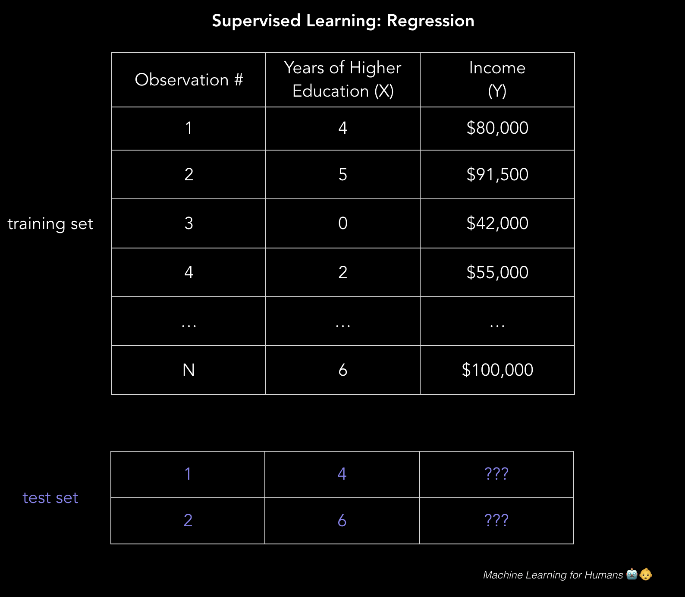
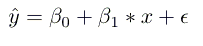
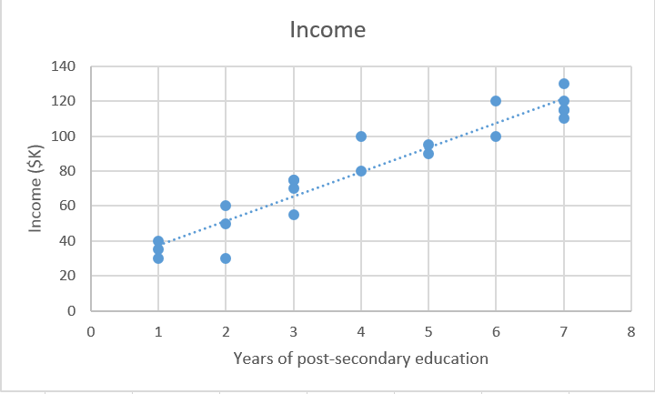
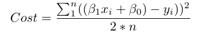
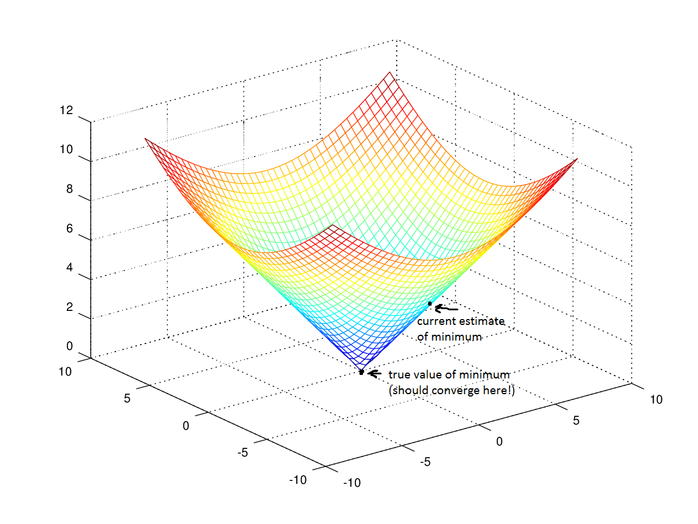
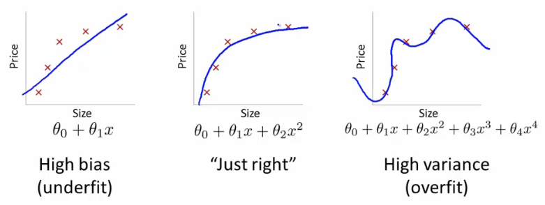
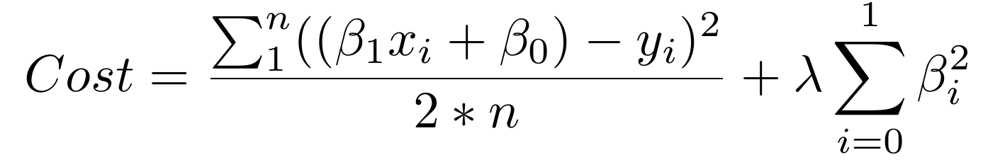

2.1 监督学习
原文：Machine_Learning_for_Humans, Part 2.1: Supervised Learning
作者：Vishal Maini
译者：飞龙
监督学习的两大任务：回归和分类。线性回归，损失函数和梯度下降。
通过在数字广告上花费更多的钱，我们能挣多少钱？这个贷款的申请人是否能偿还贷款？股市明天会发生什么？
在监督学习的问题中，我们以一个数据集开始，它包含训练样本，每个样本带有关联的正确标签。例如，学习分类手写数字的时候，监督学习算法接受数千张手写体数字的图片，以及标签，它们包含每个图片表示的正确数字。算法会学习图像和关联的数值的关系。之后将学到的关系用于划分全新的图片（不带标签），机器从来没有见过它们。这就是你可以通过使用手机拍张照片，来存入支票的原因。
为了展示监督学习的工作原理，让我们看一个问题，根据某人完成的高等教育的年数，来预测年收入。更形式化来说，我们打算构建一个模型，它近似描述了高等教育年数X和对应年收入Y的关系f。
Y = f(X) + ϵ
X（输入）为高等教育的年数Y（输出）为年收入f为描述X和Y关系的函数ϵ（epsilon）为随机误差项（可正可负），均值为零关于
ϵ：
ϵ表示模型的残余误差，它是你的算法的理论极限，由于你尝试解释的现象中存在固有噪声。例如，想象构建一个模型来预测抛硬币的结果。此外，数学家 Paul Erdős 将孩子们称为
ϵ，因为在微积分中（而不是统计学），ϵ代表任意小的正数值。很恰当吧？
一种预测收入的方式，就是创建一个基于规则的严格模型，来表示收入和教育如何相关。例如，我估计出，高等教育每增加一年，年收入增加 $5000。
income = ($5,000 * years_of_education) + baseline_income
这个方式就是构建一个解的示例（而不是学习一个解，就像下面描述的线性回归方法那样）。
通过包含一些规则，关于学位类型、工作年数、学校的层次，以及其它，你可以提出一个更复杂的模型。例如，“如果他们完成了学士或更高的学位，就将收入估计为 1.5 倍”。
但是这种类型的，明确的基于规则的规划，对于复杂数据不是很有效。想像一下，尝试设计一个图像分类器算法，它由if-then语句组成。这些语句描述了像素亮度的组合，来判断它是否是一只猫。
监督机器学习通过让计算机为你工作，来解决这个问题。通过识别数据中的规律，机器能够得到启发。这个和人类学习最大的差异是，机器学习运行在计算机硬件上，并且可以通过计算机科学和统计学的视角很好地理解，然而人类的模式识别发生在生物大脑中（不过完成了相同的目标）。
在监督学习中，机器试图从零开始 学习收入和教育之间的关系，通过使用带标签的训练数据来运行算法。习得的函数可以用于估计人们的收入，其中收入Y是未知的，只要我们将教育年数X作为输入。换句话说，我们可以将我们的模型用于不带标签的测试数据来估计Y。
监督学习的目标是，当获得X已知Y未知的新样本时，尽可能准确地预测Y。下面我们会探索多种最常见的方法。
监督学习的两个任务：回归和分类
回归：预测连续数值。某个房子售价是多少？
分类：分配标签。某幅画是猫还是狗？
这一节的剩余部分会关注回归。2.2 节中我们会深入分类方法。
回归：预测连续值
回归预测连续的目标变量Y。它允许你估计一个值，例如房价或者人类寿命，基于输入数据X。
这里，目标变量的意思是我们所关心的，用于预测的位置变量。连续的意思是，在Y可以取的值中，不存在间隔（不连续）。另一方面，离散变量，只可以取有限个数的值。例如，孩子的数量是个连续变量。
收入的预测是个经典的回归问题。你的输入数据X包含所有数据集中的个体的相关信息，可以用于预测收入，例如教育年数、工作年数、职位、或者邮政编码。这些属性叫做特征，它们可以是数值（例如工作年数），或者分类（例如职位和研究领域）。
你可能想要尽可能多的，和这些特征相关的训练观测值，来定位输出Y，使你的模型可以学习X和Y之间的关系f。
数据分为训练集和测试集。训练集拥有标签，所以你的模型可以从这些带标签的样本中学习。测试集不带标签，也就是，你还不知道你尝试预测的值。你的模型可以推广到从未见过的情况，以便它在测试数据上表现良好，这个十分重要。
回归
Y = f(X) + ϵ，其中X = (x1, x2 … xn)训练：机器从带标签的训练数据习得
f测试：机器从不带标签的测试数据预测
Y要注意，
X可以是个张量，它的维度可以是任意的。一维张量是向量（一行多列），二维张量是矩阵（多行多列）。你也可以拥有三、四、五甚至更高维的张量（例如三维张量拥有行、列和深度）。为了回顾这些术语，请参考线性代数回顾的前几页。
在我们的非常简单的二维示例中，它的形式是csv文件，其中每行包含一个人的教育水平和收入。使用更多特征来添加更多的列，你可以拥有更加复杂但是可能更加准确的模型。

所以我们如何解决这些问题？
我们如何构建模型，在现实世界中做出更准确、实用的预测？我们可以通过使用监督学习算法来实现。
现在让我们进行最有意思的部分：了解算法。我们会探索几种方式来实现回归和分类，并且展示机器学习概念中的关键。
线性回归（普通最小二乘）
画一条直线。是的，这也算机器学习。
首先，我们专注于使用线性回归解决收入预测问题，因为线性模型不是很适合图像识别任务（这是深度学习的领域，我们之后也会探索）。
我们拥有数据集X，以及对应的目标值Y。普通最小二乘（OLS）的目标是，习得一个线性模型，如果我们得到了一个未见过的x，我们可以用它来预测新的y，并且误差尽可能小。我们打算基于某个人的教育年数，猜测它的收入。
X_train = [4, 5, 0, 2, …, 6] # 高等教育的年数
Y_train = [80, 91.5, 42, 55, …, 100] # 对应的年收入，单位为千美元
线性回归是个参数化方法，也就是说，它需要作出X和Y的函数形式的假设（我们之后会涉及非参数化方法的示例）。我们的模型是个函数，使用特定的x预测ŷ：

这里，我们做出了一个明确的假设，
X和Y是存在线性关系的。也就是说，对于每个X中的单位增长，Y的增长（或下降）不变。
β0是纵截距，β1是直线斜率，也就是教育每增加一年，收入增长（或者下降）多少。
我们的目标是，习得模型参数（这里是β0和β1），使模型预测中的误差最小。
为了寻找最佳的参数：
定义一个成本函数，或者损失函数，它度量了我们的模型的预测有多么准确。
寻找使损失最小的参数，也就是，使我们的模型尽可能准确。
以图形的方式，在二维中，它会产生一条最佳拟合直线。在三维中，我们可以画一个平面，所以高维中就是超平面。
维度的注解：为了简便，我们的示例是二维的，但是你的模型通常拥有更多特征（
x）和系数（β）。例如，添加更多相关变量，来提升模型预测的准确性。相同的原理可以推广到高维，虽然超过三维的东西很难可视化。

在数学上，我们观察每个真实数据点（y）和我们的模型的预测（ŷ）之间的差。计算这些差的平方来避免负数，并惩罚较大的差，之后将它们相加并取平均。这度量了我们的数据有多么接近直线。

n为观察值的的数量。使用2 * n来代替n，在求导来使损失最小时，使我们的式子更加整洁，虽然一些统计学家认为这是这种亵渎。当你开始对这种东西有意见的时候，你就太偏执了。
对于一个像这样的简单问题，我们可以使用微积分计算闭式解，来寻找最佳的β参数，它使我们的损失函数最小。但是随着成本函数的复杂性的增长，使用微积分寻找闭式解就不太可能了。这就推动了一种迭代方式，叫做梯度下降，它允许我们使复杂的损失函数最小。
梯度下降：习得参数
蒙住眼睛，向下走一步。当你无路可走只能向上的时候，你就到了底部。
梯度下降会一遍一遍地出现，特别是在神经网络中。机器学习库，例如 scikit-learn 和 TensorFlow 会在背后的任何地方使用它，所以它值得了解细节。
梯度下降的目标是寻找我们模型的损失函数的最小值，通过在迭代中得到它的越来越好的近似值。
想象你自己蒙上眼睛穿过一个山谷。你的目标是寻找山谷的底部。你要怎么做呢？
一个可行的办法是，触摸你周围的地面，向地面下降最快的方向移动。走出一步，之后不断重复相同的过程，直到地面变成平的。之后你就知道了你到达了山谷的底部。如果你在所在位置向任何方向移动，你最终都会位于相同的高度，或者更高。
回到数学，地面变成了损失函数，山谷底部的高度变成了函数的最小值。
让我们看一看回归中的损失函数：

我们看到这个实际上是两个变量的函数：β0和β1。所有其余变量都是已确定的，因为X，Y和n都在训练过程中提供了。我们打算尝试使这个函数最小。

这个函数是f(β0,β1)=z。为了开始梯度下降，你需要对参数β0和β1做出一些猜测，它们使函数最小。
下面，你寻找损失函数对每个β参数的偏导数[dz/dβ0, dz/dβ1]。偏导数表示，如果你为β0或者β1增加一个很小的值，总损失增加或减少多少。
换一种方式。假设教育年数（β0）为零会增加模型的损失（也就是不准确度），这会将你的年收入的估计值增加多少？你需要向相反方向移动，以便你最终向下走并使损失最小。
与之类似，如果你增加“教育年数的每个增量会影响多少收入”的估计量（β1），这会将损失（z）增加多少？如果偏导数dz/β1是个复数，那么β1的增加是极好的，因为它会降低总损失。如果它是个正数，你需要降低β1。如果是零，不要修改β1，因为这表示你已经到达最优了。
持续做这件事，直到你到达了底部，也就是，算法收敛，损失到达最小。存在大量技巧和例外情况，它们超出了这一章的范围，但是通常来说，这就是你为你的参数化模型寻找最优参数的方式。
过拟合
过拟合：“Sherlock，你对刚才发生的事情的解释，太特定于这个环境了。”
正则化：“不要把事物过度复杂化，Sherlock。我会敲打你的每个额外的单词。”
超参数（
λ）：这里就是我敲打你的每个额外的单词时的力量。
机器学习的一个常见问题就是过拟合：习得一个函数，它完美解释了模型从中学习的训练数据，但是不能很好地推广到未见过的测试数据。过拟合在模型从训练数据过度学习时发生，它开始选取一些个性，它们不是现实世界中的典型规律。当你使你的模型变得复杂时，这就是个问题了。拟合不足是个相关的问题，其中你的模型不够复杂，不能捕获数据的隐含趋势。
偏差和方差的权衡
偏差是误差总数，由使用简化的模型来近似真实世界的情况引入。
方差是你的模型的测试误差变化多少，基于训练数据的变化。它反映了模型对训练数据集的个性的敏感度。
随着模型复杂度的增长，它变得更加摆动（灵活），它的偏差下降（对解释训练数据有利），但是方差增加（也更难推广）。最终，为了得到良好的模型，你需要低偏差和低方差的模型。

来源：Coursera 的机器学习课程，由吴恩达讲授
要记住，我们关心的唯一的事情就是，模型在测试数据上如何表现。你打算在标记邮件之前，预测哪个邮件会标记为垃圾，而不仅仅是构建一个模型，它可以以 100% 准确度，重新分类最开始用于构建自身的邮件。马后炮是 20/20，真正的问题是学到的经验是否在未来有所帮助。
右边的模型对于训练数据是零损失的，因为它完美拟合了每个数据点。但是这个经验不能推广。对于解释不在线上的数据点来说，这是个灾难性的任务。
两种避免过拟合的方法：
使用更多训练数据。你拥有更多，通过从任意单一的训练样本大量学习，就更难过拟合数据。
使用正则化。在损失函数里添加一个惩罚，来构建一个模型，避免为任意一个特征分配过多的解释性权重，或者允许考虑过多特征。

上面的和式的第一部分是正常的损失函数。第二部分就是正则项，为较大的β系数添加惩罚，它将过大的解释性权重给予任何特定的特征。同时使用这两个元素，成本函数现在平衡了两个优先级：解释训练数据，并防止解释过于特定。
损失函数中，正则项的lambda系数是个超参数：你的模型的通用设置，可以增加或者减少（也就是调整），以便改进表现。较高的lambda值会更严厉地惩罚较大的β参数，它们可能导致过拟合。为了决定lambda的最佳值，你可以使用叫做交叉验证的方法，它涉及在训练过程中，保留一部分训练数据，之后观察，模型对保留部分的解释有多好。我们会深入了解它。
这就完成了
这里是我们在这一节中涉及到的东西：
- 监督机器学习如何让计算机，能够从带标签的训练数据中学习，而不需要显式编程。
- 监督学习的任务：回归和分类。
- 线性回归，简单而实用的参数化算法。
- 使用梯度下降习得参数。
- 过拟合和正则化
下一节“2.2 节：监督机器学习 II”中，我们会讨论分类的两个基本方法：对数几率回归（LR）和支持向量机（SVM）。
练习材料和扩展阅读
2.1a 线性回归
对于线性回归的更彻底的讲授，阅读《An Introduction to Statistical Learning》的 1~3 章。这本书可以免费在线阅读，并且是用于使用配套练习理解机器学习概念的优秀资源。
对于更多练习：
- 玩转波士顿房价数据集。你可以使用带有漂亮 GUI 的软件，例如 Minitab 和 Excel，或者使用 Python 或者 R 用笨办法来完成它。
- 亲自尝试 Kaggle 挑战，例如房价预测，并在自己尝试之后，看看其他人如何解决问题。
2.1b 实现梯度下降
为了在 Python 中实际实现梯度下降，查阅这篇教程。然后，这里是相同概念的更加数学化的严格描述。
在实战中，你很少需要从零开始实现梯度下降，但是理解它背后的工作原理，会让你更有效地使用它，并且在出现问题时理解其原因。